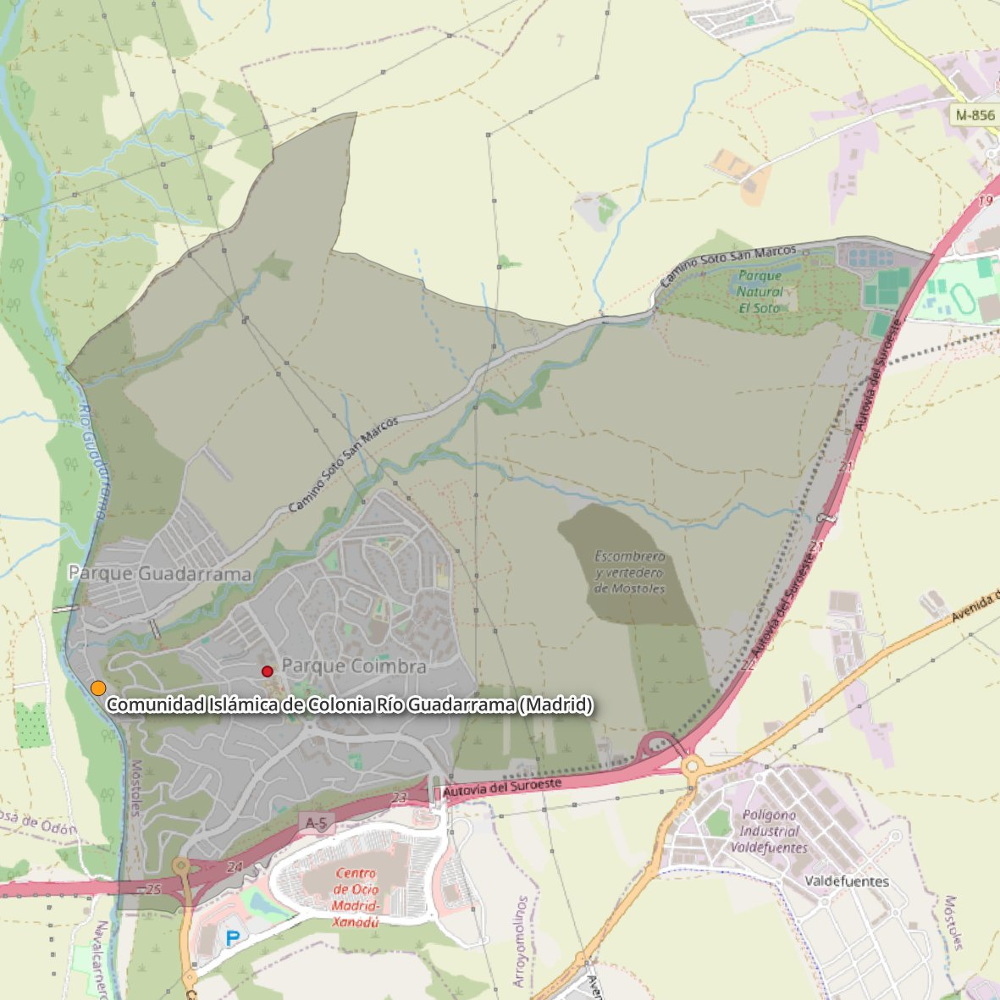
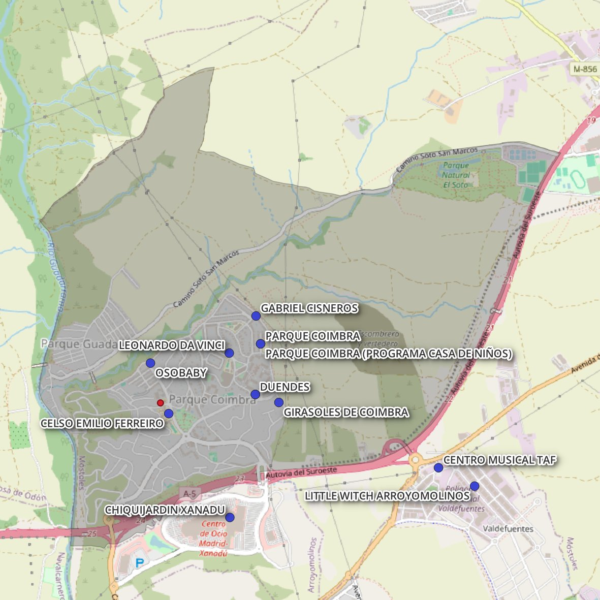

Puntos de interés en el territorio parroquial
Parroquia San Simón de Rojas (Móstoles) · Arciprestazgo de Móstoles
Entidades religiosas no católicas

1 entidad religiosa no católica en el territorio de la parroquia.
Musulmanes (1)
- Comunidad Islámica de Colonia Río Guadarrama (Madrid)Avenida Estéban García 33, Móstoles
Fuente: Registro de Entidades Religiosas del Ministerio de la Presidencia, Justicia y Relaciones con las Cortes. Situación en el mapa: dirección geocodificada con CartoCiudad (IGN) o Nominatim (OpenStreetMap).
Centros educativos

5 centros educativos en el territorio de la parroquia (público: 5).
| Centro | Tipo | Titularidad | Domicilio | Web |
|---|---|---|---|---|
| CELSO EMILIO FERREIRO | Colegio de educación infantil y primaria | Público | Avenida de los Sauces, 53, 28935 Móstoles | Página web |
| GABRIEL CISNEROS | Instituto de educación secundaria | Público | Calle de las Arizónicas, 20, 28935 Móstoles | Página web |
| LEONARDO DA VINCI | Colegio de educación infantil y primaria | Público | Calle del Eucalipto, 37, 28935 Móstoles | Página web |
| PARQUE COIMBRA | Escuela infantil | Público | Calle del Cerezo, s/n, 28935 Móstoles | Página web |
| SUR-8, MOSTOLES | Zona casas de niños | Público | Calle del Tamarindo, s/n, 28935 Móstoles | Página web |
Fuente: registro de centros educativos de la Comunidad de Madrid. Solo se recogen los centros de alta.